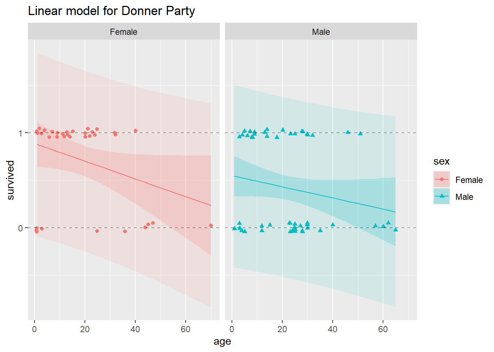
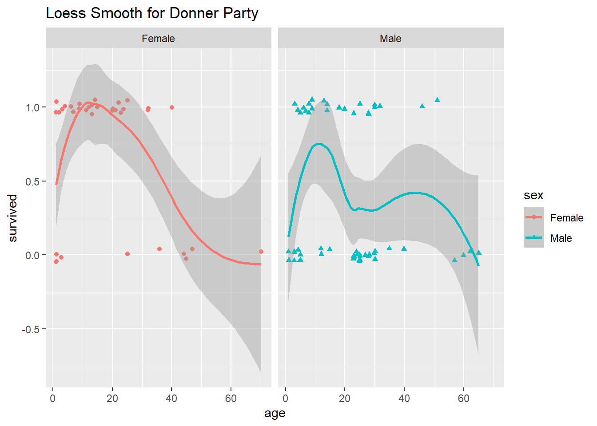

In the previous lab, we introduced some simple statistical inference procedures for analyzing data in contingency tables. These procedures were “randomization-based,” in that they involved either directly constructing a randomization distribution of the data under a hypothesis of complete independence between two variables or approximating such a randomization distribution.
In most real data analysis situations, we will want to ask and answer more sophisticated questions than “are any variables related to any others.” We may have research questions like “how does the relationship between X and Y depend on the changing level of Z?” Or, “How do the odds of success change when we increase the value of a certain explanatory variable?” In these situations, we will need to move beyond randomization methods and begin using statistical models for categorical responses.
As you will see in this lab, modeling categorical responses with statistical methods designed for continuous ones can go sideways almost immediately, so we will use new approaches – such as generalized linear models, of which logistic regression is a special case.
Please run the following chunk of R code to load the packages we will use for this lab.
library(vcdExtra)
Warning: package 'vcdExtra' was built under R version 4.3.3
Warning: package 'vcd' was built under R version 4.3.3
Warning: package 'gnm' was built under R version 4.3.3
library(tidyverse)
Warning: package 'ggplot2' was built under R version 4.3.3
library(magrittr)
Donner Data
You have already seen a version of the Donner Party data in the narrated lectures for Module 3. That version of the dataset was the one found in the Sleuth3 package, and it included data only about adult members of the Donner Party. The version we will use here is from the vcdExtra package, and it includes data about all members of the Party, including children.
data(Donner)head(Donner)
family
age
sex
survived
death
Antoine
Other
23
Male
0
1846-12-29
Breen, Edward
Breen
13
Male
1
NA
Breen, Margaret I.
Breen
1
Female
1
NA
Breen, James
Breen
5
Male
1
NA
Breen, John
Breen
14
Male
1
NA
Breen, Mary
Breen
40
Female
1
NA
The main question here:
After accounting for age, is there evidence of a difference in the survival probability of men and women in the Donner Party?
Since we will be concerned only with how age and sex explain whether Donner Party members survived, we will drop the other variables.
Donner %<>%select(.,sex, age, survived)# Add a factor version of survival, with named levels, for use in subsequent plottingDonner %<>%mutate(survival_labeled =factor(ifelse(survived ==1, "survived", "died")))Donner %>%select(-survived) %>% summary
sex age survival_labeled
Female:35 Min. : 1.00 died :42
Male :55 1st Qu.: 7.25 survived:48
Median :20.50
Mean :20.87
3rd Qu.:28.00
Max. :70.00
Throughout the remainder of this lab, we will treat the Donner data as a representative sample from some population, and practice performing statistical inference about it as such. However, given the extreme (and frankly bizarre) circumstances that produced these data, it’s unclear what that population might be (hopefully one to which we never belong!). Therefore, the results of inferential procedures we employ may not have any obvious population-level interpretations. Nevertheless, we can use these inferences to make some statements/conclusions about the Donner Party itself.
You might also think of this lab as an exercise in modeling-as-data-exploration for this data set, or simply as general practice with using the modeling methods. In any real data-analysis situation, you should carefully consider the scope of inference – given the available data, the range of circumstances to which your statistical conclusions from that data can be reasonably applied.
Exploration
The variable age is continuous, the response survived is binary, and so far, we don’t have any tools for that situation. When all you have is a chi-square test, everything looks like a contingency table, and if we just collapse age away, we can produce a familiar 2x2 table of counts:
(tbl1 <-xtabs(data = Donner, ~ sex + survived))
survived
sex 0 1
Female 10 25
Male 32 23
And see the proportions surviving in each sex
prop.table(tbl1, margin =1) %>%round(2)
survived
sex 0 1
Female 0.29 0.71
Male 0.58 0.42
Of the original 55 males, 42% survived, and of the original 35 females, 71% survived,
chisq.test(tbl1)
Pearson's Chi-squared test with Yates' continuity correction
data: tbl1
X-squared = 6.392, df = 1, p-value = 0.01146
and the p-value for the difference in survival by sex is fairly small (but remember that a p-value doesn’t really make sense here without a population to point to).
From the proportions, we can get the odds of survival for males and females, respectively:
(male_odds <-0.42/0.58)
[1] 0.7241379
(female_odds <-0.71/0.29)
[1] 2.448276
And the odds ratio for survival by sex:
(mf_odds_ratio <- male_odds/female_odds)
[1] 0.2957746
Ignoring age, the odds of survival for males is 30% of the odds of survival for females.
We really don’t want to base any conclusions on this simple aggregation, however – we actually do want to use the information about the continuous variable age, and the relationship between sex and survival may be different at different age values. Let’s see how we might proceed treating age as continuous.
Looking at the Data
If you looked at Module 1 Lab 0, you already saw a plot of the Donner Party data. Let’s look at a similar plot:
Also, remember that in Lab 0, we showed you these data with some jitter added so that the overlapping points are given a little separation. Here is the plot with jitter:
It’s still not at all obvious what’s going on here. You can see from this jittered version of the plot that there do seem to be a higher proportion of females that survived than males (survived == 1 corresponds to survival), and maybe that there was a “sweet spot” in terms of the ages of the females that survived (i.e., between the ages of about 5 and 35, it looks like most of the females survived).
What’s Wrong with Multiple Linear Regression Here?
The multiple linear regression model equates the mean of a response variable to a linear combination of explanatory variables, often called the “linear predictor”:
In the Donner Party data, \(Y\) is the 0/1 (binary) survival outcome, and we have \(X_1\) = age and \(X_2\) = sex. The mean of a binary random variable is just the probability of a 1, so this model says the probability of survival is a linear function of age and sex (and possibly the interaction between them). We could call this the “linear probability model”
As you may recall from previous courses, including the binary predictor sex means the intercept of the survival-probability/age line can be different for males and females. Including the interaction of age with sex means that the slope of the line is allowed to differ between males and females as well.
Using the binary-coded survival values, let’s go ahead and fit a multiple linear regression model to these data. That is, we’re going to tell lm() that 0 and 1 are just regular numbers, lm() is going to draw some straight lines through the points, and we’re going to try to interpret y-values from those fitted lines as estimates of survival probabilities at different values of age and sex.
Recall that probabilities must, by definition, take values within the range [0, 1]
Here’s our linear model.
lm1 <-lm(data = Donner, survived ~ sex * age) # don't try this at worksummary(lm1)
Call:
lm(formula = survived ~ sex * age, data = Donner)
Residuals:
Min 1Q Median 3Q Max
-0.8793 -0.4081 0.1347 0.4724 0.7512
Coefficients:
Estimate Std. Error t value Pr(>|t|)
(Intercept) 0.888690 0.121520 7.313 1.27e-10 ***
sexMale -0.339005 0.163881 -2.069 0.0416 *
age -0.009362 0.004914 -1.905 0.0601 .
sexMale:age 0.003463 0.006348 0.546 0.5868
---
Signif. codes: 0 '***' 0.001 '**' 0.01 '*' 0.05 '.' 0.1 ' ' 1
Residual standard error: 0.4729 on 86 degrees of freedom
Multiple R-squared: 0.1415, Adjusted R-squared: 0.1115
F-statistic: 4.724 on 3 and 86 DF, p-value: 0.004236
Well that didn’t explode (unfortunately, R will typically allow us to fit any goofy model we want – it’s up to us to realize it’s a goofy model!) The R-Squared isn’t that high, but it’s not terribly low. So what’s wrong with this model? Let’s examine the fit of the model and its predictions more closely.
The following R chunk obtains 95% confidence and prediction bands, and then plots those bands, along with the linear fit, to the Donner Party data:
Warning in predict.lm(lm1, interval = "prediction", level = 0.95): predictions on current data refer to _future_ responses
augment_Donner <-as.data.frame(cbind(Donner, linear_confidence_bands, linear_prediction_bands))# Delete duplicate 'fit' columns, since both linear_confidence_bands and linear_prediction_bands have 'fit'.augment_Donner <- augment_Donner[,-5]# Big plotggplot(data = augment_Donner) +# plot jittered datageom_jitter(aes(x = age, y = survived,color = sex,shape = sex),height =0.05, width =0.2) +# plot fitted linesgeom_line(aes(x = age, y = fit, color = sex)) +# plot 95% confidence bandsgeom_ribbon(aes(x = age, fill = sex, ymin = lwr_conf, ymax = upr_conf),alpha =0.2) +# plot 95% prediction bandsgeom_ribbon(aes(x = age, fill = sex, ymin = lwr_pred, ymax = upr_pred),alpha =0.1) +# plot reference lines at 0 and 1 (minimum and maximum possible probabilities)geom_hline(yintercept =0, lty =2, alpha =0.4) +geom_hline(yintercept =1, lty =2, alpha =0.4) +facet_grid(.~sex) +ggtitle("Linear model for Donner Party")

In this plot, we’ve split the data for males and females into two side-by-side panels. In both panels, the horizontal dashed lines appear at y = 0 and y = 1, to demarcate the lower and upper bounds on probability. In each plot, you’ll see a solid, decreasing straight line – this is the model fit, or the estimated linear regression lines that we obtain from fitting the linear probability model.
In each panel, the 95% confidence bands appear as the darker ribbons around the fitted model lines. The confidence bands show, at each value of age and sex, a 95% confidence interval for the probability of survival. The confidence bands are widest at age values further from the mean age – uncertainty about the intercept applies to the whole line equally, but uncertainty about the slope makes a bigger difference near the ends. Notice that for the higher ages, 95% confidence bands slip over the y = 0 line for both males and females – but we know that probability cannot be less than zero!
The lightly-shaded and substantially wider ribbons around the fitted regression lines represent 95% prediction intervals. Remember that prediction intervals are wider than confidence intervals, because prediction intervals incorporate uncertainty in the regression estimates and uncertainty due to sampling (predicting) a new response value. These make sense when the response is continuous, but not when it’s binary. If we go to predict a new binary observation, the only possible values for the new response are 0 and 1 – there’s zero probability that a new observation falls anywhere but along the Y = 0 or Y = 1 lines, and uncertainty about which one of those two values it will take cannot be meaningfully quantified by any kind of interval. This is a critical difference between the binary response and continuous response situations, which the linear probability model cannot respect.
In light of the disclaimer about scope of inference earlier in the lab, you might reasonably object to this nitpicking about confidence intervals in the Donner scenario – after all, it’s not like we can define the population from which this sample of individuals was drawn, so what do the intervals mean? Isn’t it enough that our fitted values make sense? Leaving aside the fact that in similar binary-response situations we would prefer sane confidence intervals, it’s easy to see that the fitted values themselves may NOT make sense when we use the linear probability model. Look what happens when we restrict our model to the adult members of the Donner Party:
# Subset to include only adultsDonner_adults <-filter(Donner, age >18)# Plot just estimated probabilities, no uncertainty bandsggplot(data = Donner_adults) +# original datageom_jitter(aes(x = age, y = survived,color = sex,shape = sex),height =0.05, width =0.2) +# This is a shortcut, within ggplot, to fitting a linear model and plotting the fitsgeom_smooth(mapping =aes(x = age, y = survived, color = sex), method ='lm', se =FALSE) +# reference linesgeom_hline(yintercept =0, lty =2, alpha =0.4) +geom_hline(yintercept =1, lty =2, alpha =0.4) +facet_grid(.~sex) +ggtitle("Linear model for Donner Adults")
`geom_smooth()` using formula = 'y ~ x'
Now we see that the estimated probability of survival for a female over age 60 is negative, which is absurd.
The demonstrates that the linear probability model, when applied to binary data, can grossly violate the most basic constraints of the problem.
The Logistic Regression Model
The technique we will use for modeling probabilities of binary responses as a function of one or more (possibly continuous) explanatory variables is called logistic regression. This model is one instance of the generalized linear model, which we will rely on throughout the rest of the course. Whereas standard linear regression models suppose that the linear predictor is equal to the mean of the response variable, generalized linear models suppose that the linear predictor is equal to some known function of the mean response. By incorporating different functions (called “links”) that transform the mean response, generalized linear models let us extend the linear model idea to accommodate many different types of responses.
In the binary response situation, our problem is that linear functions of numeric variables can, in general, take values from across the entire real line, \((-\infty,\infty)\), while the probabilities of success are necessarily restricted to the [0,1] interval. In this situation, a simple straight line fit can always go “out of bounds”, as shown above. However, if we find a function that stretches the probabilities from \([0,1]\) to \((-\infty,\infty)\), then we can model the transformed probabilities as a linear function of numeric explanatory variables, without worrying about going out of bounds. Then we can back-transform the fitted values back onto the \([0,1]\) interval using the inverse transformation, which will map \((-\infty,\infty)\) back to \([0,1]\). This circumvents the problem we saw above with getting fitted probabilities outside of the [0,1] interval. If we choose a good transformation function, we can even keep much of the simplicity and interpretability of the linear regression model. Let’s make this concrete.
The Logit Transformation
We will use the logit (or “log-odds”) function to link the probabilities to the linear combination of predictors. The logit function looks like this:
\[\mathrm{logit}(p) = \log(p/(1-p))\]
logit <-function(p){log(p/(1-p))}
This is a smooth, invertible function from the \([0,1]\) interval to the whole real line, \((-\infty,\infty)\). Plug in a probability, get the (natural) log of the odds. You can see this transformation, as well as the probability to odds transformation, compared in the plot below. The probability to odds transformation takes us from \([0,1]\) to \([0,\infty)\), and the log transformation of that takes us from \([0,\infty)\) to \((-\infty,\infty)\).
The y-axis on the plot below ranges only from \([-3, 3]\), but remember that the odds function is actually defined all the way from 0 to \(\infty\), and the logit ranges all the way from \(-\infty\) to \(\infty\). The identity transformation, \(f(p) = p\), is included for reference.
prob <-seq(0.05, 0.95, length =100) # restricting the range of probabilities shown in order to keep the transformed values finite. odds <- prob/(1-prob)logits <-log(odds)transformations <-data.frame(identity = prob, odds, logits) %>%gather() %>%rename(transform_function = key)ggplot(data = transformations, aes(x =rep(prob, 3), y = value, color = transform_function)) +scale_y_continuous(limits =c(-3, 3), breaks =c(-3:3)) +geom_line() +geom_hline(yintercept =0, lty =2) +geom_vline(xintercept =0.5, lty =2) +xlab("original probabilities") +ylab("transformed values") +ggtitle("Possible transformations from probability scale")
The logit is not the only invertible transformation from the probability interval to the entire real line, but it has several desirable properties.
From this plot, we can see that probabilities greater than 1/2 are mapped to positive logits and probabilities less than 1/2 are mapped to negative logits (remember \(p = 1/2 => odds = 1 => \log(odds) = 0\)) so the sign of the logit of a probability has a straightforward interpretation – if the log-odds is positive, the event is more likely than not to occur.
In the context of our Donner problem, we can apply the logit function to the survival probability to get a new logistic regression model that might work better than the linear probability model we tried before. We’ll write the new model as:
\[\mathrm{logit}(P(Survived|Sex, Age)) = \beta_0 + \beta_1Age + \beta_2Sex + \beta_3Age \times Sex\] That is, a non-linear function of survival probability is equal to the linear predictor.
The inverse of the logit function is called the logistic function. It looks like this:
\[f(x) = (e^x)/(1 + e^x)\]
logistic <-function(x){exp(x)/(1+exp(x))}
The logit and logistic function are inverses in the same way that the log and exponential functions are inverses:
p <-0.7# Start with a probability p(lp <-logit(p))
[1] 0.8472979
logistic(lp) # Recover the original p
[1] 0.7
x <--17# Start with any real number(lx <-logistic(x))
[1] 4.139938e-08
logit(lx) # Recover the original x
[1] -17
Applying the logistic function to both sides of the model equation gives another equivalent way to write the model: \[P(Survived|Sex, Age) = logistic(\beta_0 + \beta_1Age + \beta_2Sex + \beta_3Age \times Sex)\] Hence the name “logistic regression”. Now we have survival probability on it’s own, but it’s equal to nonlinear function of the linear predictor.
We could also pull out the log from the logit (log-odds), and write the model as
\[odds(Survived|Sex, Age) = \exp{(\beta_0 + \beta_1Age + \beta_2Sex + \beta_3Age \times Sex)}\] This leads to a useful interpretation. To see this, let’s drop back to a simpler logistic regression model with one predictor \(X\) and a binary response \(Y\), where \(p = P(Y = 1)\). The equation for this simple model is
\[\log(p/(1 - p)) = \beta_0 + \beta_1X\]
if we exponentiate both sides to get back to the odds scale, we have
\[p/(1-p) = e^{\beta_0 + \beta_1X}\]
Let’s sort out what happens to \(\log(p/(1-p))\) when \(X\) changes by one:
So a one-unit increase in \(X\) corresponds to a \(\beta_1\)-unit change in the log odds. And, because we can exponentiate both sides, a one-unit increase in \(X\) corresponds to a multiplicative change of \(e^{\beta_1}\). You already saw this result for the Donner Party data from the Sleuth3 library, and we’ll give another example of interpreting logistic regression coefficients later in this lab.
Fitting the Binary Logistic Regression Model
You already saw an R demonstration of the logistic regression model fit to the Donner Party data from the Sleuth3 package. Let’s look at the model fit to the full Donner Party dataset in R:
glm1 =glm(survived ~ sex * age, family =binomial(link ="logit"), data = Donner)summary(glm1)
Call:
glm(formula = survived ~ sex * age, family = binomial(link = "logit"),
data = Donner)
Coefficients:
Estimate Std. Error z value Pr(>|z|)
(Intercept) 1.85515 0.67108 2.764 0.0057 **
sexMale -1.62177 0.82673 -1.962 0.0498 *
age -0.04565 0.02480 -1.841 0.0657 .
sexMale:age 0.01957 0.03120 0.627 0.5305
---
Signif. codes: 0 '***' 0.001 '**' 0.01 '*' 0.05 '.' 0.1 ' ' 1
(Dispersion parameter for binomial family taken to be 1)
Null deviance: 124.37 on 89 degrees of freedom
Residual deviance: 110.73 on 86 degrees of freedom
AIC: 118.73
Number of Fisher Scoring iterations: 4
It doesn’t look like the interaction term, sexMale:age is needed, so we’ll refit the model without it, and use that model to examine a few things and make interpretations.
glm2 <-glm(survived ~ sex + age, family =binomial(link ="logit"), data = Donner)summary(glm2)
Call:
glm(formula = survived ~ sex + age, family = binomial(link = "logit"),
data = Donner)
Coefficients:
Estimate Std. Error z value Pr(>|z|)
(Intercept) 1.5992 0.5041 3.172 0.00151 **
sexMale -1.2068 0.4790 -2.519 0.01176 *
age -0.0338 0.0151 -2.238 0.02525 *
---
Signif. codes: 0 '***' 0.001 '**' 0.01 '*' 0.05 '.' 0.1 ' ' 1
(Dispersion parameter for binomial family taken to be 1)
Null deviance: 124.37 on 89 degrees of freedom
Residual deviance: 111.13 on 87 degrees of freedom
AIC: 117.13
Number of Fisher Scoring iterations: 4
In the same way that we examined the (poor) fit of the multiple linear regression model above, let’s examine the (better) fit of this logistic regression model and see what we notice:
# Obtain 95% pointwise confidence bands from predict.glm()glm_pred <-predict.glm(glm2, type="link", se.fit=TRUE)low <- glm_pred$fit -1.96* glm_pred$se.fitupp <- glm_pred$fit +1.96* glm_pred$se.fit# back-transform everything to the data scaleglm_fit <-logistic(glm_pred$fit)glm_lower <-logistic(low)glm_upper <-logistic(upp)# augment the Donner data frameaugment_Donner <-as.data.frame(cbind(Donner, glm_fit, glm_lower, glm_upper))# Big plotggplot(data = augment_Donner) +# plot jittered datageom_jitter(aes(x = age, y = survived,color = sex,shape = sex),height =0.05, width =0.2) +# plot fitted linesgeom_line(aes(x = age, y = glm_fit, color = sex)) +# plot 95% pointwise confidence bandsgeom_ribbon(aes(x = age, fill = sex, ymin = glm_lower, ymax = glm_upper),alpha =0.2) +# plot reference lines at 0 and 1 (minimum and maximum possible probabilities)geom_hline(yintercept =0, lty =2, alpha =0.4) +geom_hline(yintercept =1, lty =2, alpha =0.4) +facet_grid(.~sex) +ggtitle("Generalized linear model for Donner Party")
In this plot, we show the fitted line for both males and females, and the 95% confidence bands for both. Just like our confidence bands from the linear model we fit before, these are pointwise confidence bands. They do not represent 95% confidence that the band contains the entire survival curve, only 95% confidence that the survival probability is within the band at each individual point. Simultaneous confidence bands for curves are much more theoretically challenging to construct than pointwise bands, but intuitively, a 95% simultaneous confidence band for the whole curve would be wider than the 95% pointwise band shown here. As explained above, prediction intervals do not make sense in principle for binary data, so we do not calculate any from this model.
Binary logistic regression models can be used as classifiers – where a new combination of explanatory information is mapped to a 0 or a 1. Recall from Data Analytics I that a prediction from a multiple linear regression model is our best guess at a new observation from a Normal population distribution, conditioned on specific, known values for the explanatory variables. In the present case, a prediction should be our best guess at a new observation (i.e., survived or died) from a binary distribution, conditioned on an age and a sex for a new individual (supposing we didn’t already know the survival status of all the possible Donner Party members). The predictive distribution for a new observation at each point is Bernoulli(p), where p is the fitted probability at the specific values of the new combination of explanatory information. Obtaining a new prediction at a given setting of the predictor variables involves either drawing from this Bernoulli distribution, or setting a probability threshold (typically 1/2) and predicting a value of 1 if the fitted probability exceeds the threshold, 0 otherwise. For example, you could predict that a man like Jacob Donner, age 65, would not survive according to the 1/2 probability threshold:
like_Jacob_Donner <-data.frame(age =65, sex ="Male")like_Jacob_Donner$age %<>%as.numeric()# fitted probability that a 65 year old man would survivepredict(glm2, newdata = like_Jacob_Donner, type ="response")
1
0.141301
It’s really important to notice that neither the fitted lines nor the 95% pointwise confidence bands go outside the horizontal band given by the y = 0 and y = 1 lines. This is what we should expect – a much more satisfactory result from the logistic regression model than from the multiple linear regression model. Conceptually, this is because the logistic regression model is designed for modeling data such as those in the Donner Party example, where the response variable is binary. Mathematically, it is because the logistic function that maps the fitted values and confidence bounds back from the log-odds scale to the probability scale is only capable of outputting values between 0 and 1.
Assessing Model Fit
In the case of binary responses, it’s not necessary or even all that meaningful to examine residuals. Since the only response values are 0’s and 1’s, and the fitted values (once we back transform to the data scale) are probabilities, there is not a wide range of possible values for the residuals and they tend to be not very informative.
In the case of the Donner Party data, and as you can see from the plot above, the model fit is not terrific. For example, the model did not seem to pick up the “sweet spot” we noted earlier – females between the ages of about 5 and 25 seem to have all survived. Perhaps a more curvy or wiggly function would provide a better fit? Consider the following plot:
`geom_smooth()` using method = 'loess' and formula = 'y ~ x'

The loess smoother that ggplot() used to fit a line and plot confidence bands is called a non-parametric scatterplot smoother. It does seem that these non-monotonic wiggly lines do a better job of modeling survival probability as a function of age, although both the fitted line and 95% confidence bands go outside of the 0 and 1 boundaries, which is troubling.
Unfortunately, the details of loess and other non-parametric approaches are beyond the scope of this class. A big drawback to this non-parametric model fit, however, is that we can’t make any inferences about the relationships among age, sex and survival from it. That is, all we have is the plot above and a wiggly fitted line which we could use to make predictions. For all our talk about the process of making predictions from a logistic regression model, we can’t actually make much use of a purely predictive model for these particular data – whose survival are we to predict, anyway?!
Instead, we’ll go back to our imperfect logistic regression model and make inferences about the relationships among sex, age and survival using that model. There’s a famous quote, attributed to George Box (1919-2013), a well-respected British statistician who spent a large part of his academic career in the US:
“All models are wrong, but some are useful.”
This is certainly the case with our logistic regression model. It may not be the “correct” model, or even the “best” one for the Donner Party data (you might try adding a quadratic term in age and see if that looks better than either of the preceding approaches). Nevertheless, we can use it to make some useful statements about the data.
Interpreting The Fitted Model
Let’s look again at the summary information from the logistic regression model we fit:
summary(glm2)
Call:
glm(formula = survived ~ sex + age, family = binomial(link = "logit"),
data = Donner)
Coefficients:
Estimate Std. Error z value Pr(>|z|)
(Intercept) 1.5992 0.5041 3.172 0.00151 **
sexMale -1.2068 0.4790 -2.519 0.01176 *
age -0.0338 0.0151 -2.238 0.02525 *
---
Signif. codes: 0 '***' 0.001 '**' 0.01 '*' 0.05 '.' 0.1 ' ' 1
(Dispersion parameter for binomial family taken to be 1)
Null deviance: 124.37 on 89 degrees of freedom
Residual deviance: 111.13 on 87 degrees of freedom
AIC: 117.13
Number of Fisher Scoring iterations: 4
It appears that both age and sex are important for helping us to understand the odds of survival using this model. Since sexMale is an indicator function, we can write the fitted model in two parts, one for females:
log(odds of survival) = 1.60 - 0.03age.
And one for males:
log(odds of survival) = 0.39 - 0.03age.
In this second sub-model, 0.3924 = 1.5992 - 1.2068, and we rounded to the hundredths to get 0.39.
It’s from these model fits that we can obtain some estimate of the relative odds of survival for men and women of the same age. As you saw in the narrated lecture materials, because there’s no interaction term in this model, we can just exponentiate the coefficient on sexMale (-1.2068) and obtain an estimate of the multiplicative difference in odds of survival for a male and female of the same age. We can also exponentiate the upper and lower bounds of the 95% confidence interval for the regression coefficient on sexMale.
The odds of survival for a male are estimated to be roughly 30% of the odds of survival for a female, when comparing individuals of the same age (remember this is exactly the result we got from the contingency table when we ignored age, because in our final logistic regression model we’ve decided not to include any interaction between age and sex). A 95% confidence interval for this multiplicative difference runs from 11% to 75%.
You can also use the logistic back-transformation to make a comparison in terms of the probability of survival:
The probability of survival for a male is estimated to be 0.23 lower than that of a female, when comparing two individuals of the same age. A 95% confidence interval for this (additive) difference runs from 0.10 to 0.43.
Data Scale vs Model Scale, Back-transformation
Notice that the two interpretations just given are both on back-transformed scales. In general, people have a better appreciation for and understanding of probabilities and odds than they do (have) of log-odds.
The logistic regression model is fit on the log-odds scale – we call this the model scale. When we back-transform to probabilities, we get back to the data scale (i.e., the same scale as the data).
The odds scale is intermediate between the the data scale and the model scale, and it affords another option for how we interpret and communicate the results of a logistic regression model.
Module 3 Lab Assignment Instructions
You are again asked to create a self-contained R Markdown script that can generate a document which answers the questions below. You will submit the .Rmd script, and the .pdf document produced by knitting the script.
R Markdown for submission
Last week’s instructions are repeated here for your convenience.
NOTE:If you are reading these instructions from the HTML preview in the Viewer pane, they will be overwritten in the following steps. You can avoid this by “popping out” the current HTML preview into an external browser window, by clicking the the “Show in new window” icon (to the right of the broom icon in the Viewer pane).
Alternatively, you can read the instructions right from the .Rmd script, keeping in mind that you will need to switch back to the lab script tab to view the rest of the instructions once you create a new script. You could also copy and paste the whole Lab 3 Assignment Instructions section into your new document while you’re working on it, and then delete the instructions before you submit it.
Click “File” -> “New File” -> “R Markdown”, and dialog box will pop up. Change the title to “Lab Assignment 3” and name yourself as author. Select PDF as the Default Output Format, then click OK. The header of your new file should look something like this:
The file will initially contain some examples to get you started with RMarkdown, which you should replace with your lab content. Save the notebook as something like “Lab_Assignment_3” using “File” –> “Save As…”
In your new .Rmd script, answer the questions in the “Questions” section below. Include all the code you need to produce the requested outputs. Your script should include a top-level section heading for each question, for example:
# Question 1
stuff here
# Question 2
other stuff
Whether or not you include the text of the questions in your script is up to you.
Do be sure to include, near the top of your script, a code chunk that loads any non-default packages you use (such as vcdExtra or Sleuth3).
Within the question sections, you can chunk your code in whatever way seems reasonable. Incorporate any written answers outside the code chunks using Markdown formatting as needed (see “Help” -> “RMarkdown Quick Reference” for text formatting help).
To ensure that your .Rmd script will be fully self-contained (i.e. it will not depend on objects that were defined during the lab, and could be run as-is if you sent it to someone else), you should clear the workspace before you begin.
To clear the workspace, click the broom icon in the Environment pane.
Once you’ve answered the questions in your new .Rmd script and you have verified your code is self contained, you should Run -> Run All Chunks and generate a .pdf file of your document, to check that everything looks like you want it to. Having concluded that your .Rmd script produces a pdf document that includes all the output you want, submit both the Lab_Assignment_3.Rmd file and the pdf document on Canvas as your Lab Assignment 3.
Feel free to post on the discussion board if you have any questions or encounter any difficulties with this process.
Questions
The data set ResumeNames in the AER package contains information about 4870 fictitious resumes, sent to real employers as part of an experiment about racial discrimination in hiring. The binary response for each resume is whether the employer called back. Although the original research question was about racial discrimination, there are many kinds of questions you might answer using these data.
Install and load the AER package, and read the help file for the ResumeNames data.
Come up with a question about the probability of callback (the binary response) that can be answered using at least one (but no more than 5) of the 26 available predictor variables.
Consider: - Restricting your analysis to an interesting subset of the data - Transforming and combining input variables - Exploring interactions
Some example questions (which you may use or modify if you want)
(How) does the relationship between callback probability and resume quality differ by applicant race?
How many additional years of experience is having a white name vs a black name “worth” in terms of callback probability?
Does callback probability differ between applicants who meet stated job requirements and applicants who don’t? For instance, you might compare applicants who do or not meet the stated minimum number of years of experience, or applicants who do or do not list computer skills when applying to jobs for which computer skills are ostensibly required.
Does callback probability differ between male and female applicants by industry or position?
Be creative!
Use a logisitic regression model to address the question you posed in 2. Be sure to examine the fit of your model, and write a few sentences about your interpretation of the model as it addresses the question you posed.